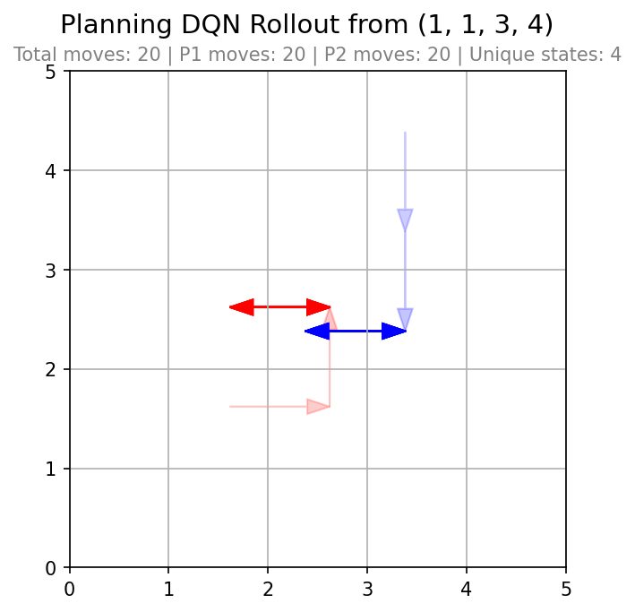
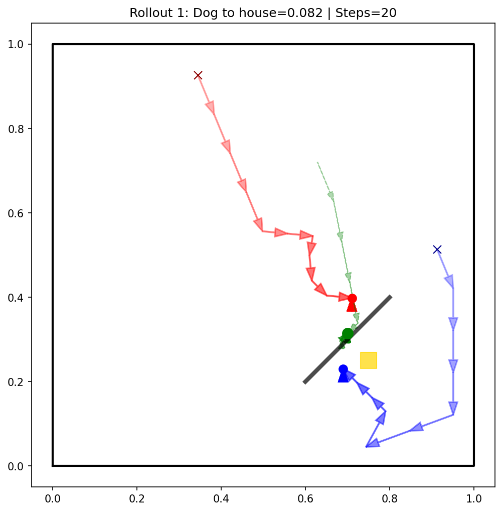

Multiple Agents & Q-Networks
Neural planning in two-player games
Overview
This project studies how two agents should act when their rewards depend on each other’s choices. None of the games learn from environment rollouts—the transition and reward rules are fully known, and each module performs neural planning: sample states, compute Bellman targets from the model, and fit deep networks to approximate Q-values over joint actions. Policies are then extracted using minimax, Nash equilibrium, or cooperative joint optimization, depending on the game type.
Four environments are implemented—two grid-based car games and two continuous “dog” games—sharing a common modular codebase built with PyTorch. The same high-level pipeline appears in each module: define the environment, plan (fit Q-networks via fitted value iteration), extract a policy, visualize rollouts, and export network weights.
Approach
Classical tabular value iteration is intractable when the state space is large or continuous. Each module instead performs approximate dynamic programming with function approximation. At every planning iteration a random state is sampled, all joint actions are evaluated using the environment model, and Bellman targets are computed from a target network. Those targets are stored in a replay buffer and the network weights are updated with supervised regression (Smooth L1 loss, Adam optimizer, gradient clipping)—fitting a function, not learning from trial-and-error interaction.
Because the model is known, no exploratory rollouts are required—the agents never “play” the game to gather experience. The planner repeatedly asks: given this state, what Q-values are consistent with the Bellman equation and the chosen game-theoretic solution concept? The answer is stored in a neural network that generalizes across states.
After planning completes, policies are derived from the fitted Q-functions. In the zero-sum car game a single network suffices; in general-sum settings each player has its own network; in the cooperative dog game both networks are planned toward a shared team objective.
Methods
The environments differ in payoff structure. The planning loop adapts the bootstrap operator used to compute next-state values and the rule used to extract actions at policy time.
| Game | Payoff type | Networks | Bootstrap | Policy |
|---|---|---|---|---|
| Car (zero-sum) | Single reward; P2 minimizes | 1 | maxa1 mina2 Q | Minimax best response |
| Car (general-sum) | Separate rewards per player | 2 | Nash value (iterated best response) | Nash equilibrium (nashpy) |
| Dog (competitive) | Each wants dog near own house | 2 | Nash value (iterated best response) | Iterated best response |
| Dog (cooperative) | Shared reward toward one house | 2 | max joint (Q1 + Q2) | Argmax of Q1 + Q2 |
Nash equilibria in small action spaces are computed exactly at policy extraction time via support enumeration, with a uniform-strategy fallback when no equilibrium is found. During planning a faster iterated best-response approximation keeps computation tractable.
Games
All four games involve two players choosing actions simultaneously each step. Player 1 is shown in red and Player 2 in blue in the rollout diagrams below.
Zero-Sum Car Game
Two cars move on a grid with four actions each (up, down, left, right). Player 1 maximizes a single scalar reward; Player 2 is treated as a minimizer. Reward is highest near the grid center (Manhattan distance from the middle), with penalties for crashing into the same cell, staying in place, and a small living cost each step. A collision ends the episode.
One Q-network outputs all 16 joint action values. Planning targets use a minimax backup: the value of the next state is the maximum over Player 1 actions of the minimum over Player 2 actions. The extracted policy picks Player 1’s maximin action and Player 2’s best response to it.

General-Sum Car Game
The grid dynamics are identical to the zero-sum variant, but each player receives a separate reward based on their own car’s position after the move. Both players prefer the center and wish to avoid crashes, yet their incentives are not strictly opposed—a general-sum game requiring Nash equilibrium reasoning rather than minimax.
Two Q-networks are planned in parallel. Bootstrapping at each next state uses approximate Nash values from the target networks. At deployment, a Nash equilibrium of the 4×4 Q-matrices is solved to select actions.

Dog Game (Competitive)
Two players move in a continuous [0, 1]² field. Each step they choose among 17 actions: stay or move in one of 16 directions spaced every 22.5°. A virtual dog sits at the midpoint of the two players. Player 1’s house is at (0.25, 0.25) and Player 2’s at (0.75, 0.75) by default. Each player’s reward is the negative Euclidean distance from the dog to their own house—a tug-of-war over the dog’s position.
Because the state space is continuous, networks must generalize beyond a tabular representation. States are sampled with boundary bias during planning. The Nash-Q procedure mirrors the general-sum car game; policy vector fields visualize each player’s preferred direction across the field.

The vector-field plot shows each player’s policy direction when the opponent is held at a fixed corner, revealing how agents steer the shared dog toward their respective houses.

Dog Game (Cooperative)
The cooperative variant keeps the midpoint dog mechanic but gives both players the same goal: move the dog to a single house (default upper-right). A wall segment blocks direct paths; player movement and the dog midpoint respect collision geometry, with blocked motion sliding tangentially along the wall.
Both players receive identical reward: negative distance to the house, plus a bonus when the dog enters a success radius. Planning selects the joint action maximizing the sum of both players’ Q-values at the next state rather than a Nash equilibrium. Rollouts terminate early on success.

Architecture
Each game is a self-contained Python package with the same module layout. Shared utilities live at the repository root so replay buffers, Nash helpers, and output paths are not duplicated.
- Entry script — CLI arguments and orchestration
environment.py— transitions, rewards, and state samplingdqn.py— network architecture, state encoding, replay buffer importtrainer.py— neural planning loop and target computationpolicy.py— policy extraction and rollout simulationvisualization.py— loss curves and trajectory plotsio_utils.py— weight export and output pathsutilities/— shared replay buffer, Nash solvers, runtime helpers
Grid games use a compact network (4 → 64 → 64 → 16 joint actions). Continuous dog games use a larger network (4 → 256 → 256 → 289 joint actions for 17×17 action pairs). Each run performs 8,000 planning iterations by default and produces rollout images, loss plots, and exported weight matrices in each game’s directory.
Usage
Install dependencies from the repository root (torch,
numpy, matplotlib; game modules also require
nashpy where Nash equilibria are computed). Run each game from its
directory or pass the script path from the repo root:
# Zero-sum car game (minimax)
python cargame_zerosum/cargame_z.py --iterations 8000 --grid-size 5
# General-sum car game (Nash-Q)
python cargame_gensum/cargame_g.py --iterations 8000 --grid-size 5
# Competitive dog game (Nash-Q)
python doggame/doggame.py --iterations 8000 --horizon 10
# Cooperative dog game (joint Q)
python doggame_coop/doggame_coop.py --iterations 8000 --horizon 20
The dog games accept additional flags for step size, house positions, wall geometry,
and success radius. Each run saves planning_loss.png,
rollout_*.png, and weights_player*.txt alongside the
game module. The competitive dog game also writes vector_fields.png.